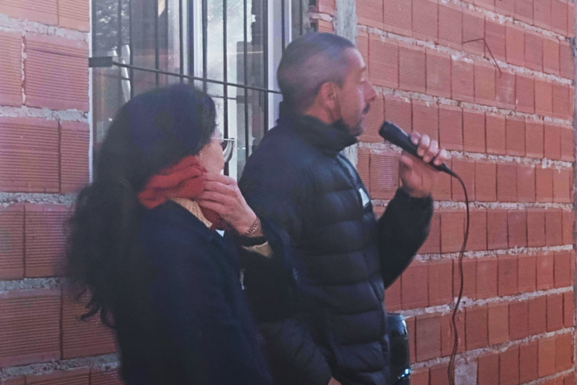
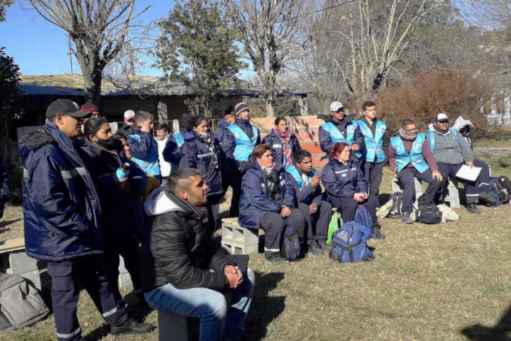
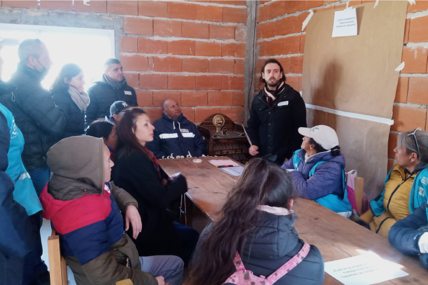
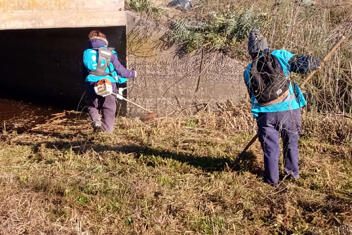
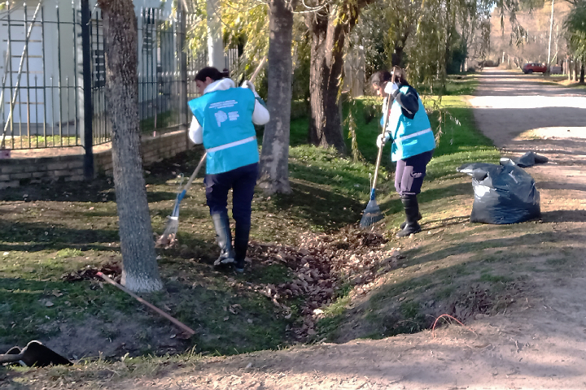

Capacitación en materia ambiental
El pasado 10 de junio se llevo a cabo junto a la Dirección de Monitoreo Hídrico una capacitación en materia medio-ambiental a las cuadrillas de las cooperativas del municipio de Brandsen: Primero Brandsen y Néstor Kirchner. El mismo día se realizó un operativo de limpieza sobre el Arroyo San Luis más la limpieza y perfilados de las zanjas de la calle principal de la localidad de Gómez.




